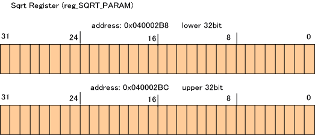
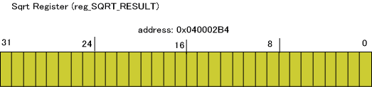
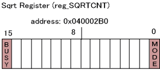

DS には除算および平方根演算のアクセラレータが備わっています。ここでは平方根演算器について説明します。
平方根演算のためのレジスタ
データレジスタとして、演算パラメータ、演算結果のために以下のレジスタが用意されています。


平方根演算器を制御するための以下のコントロールレジスタが用意されています。

平方根演算器の動作
平方根演算器は、データレジスタ SQRT_PARAM に平方根演算のパラメータをセットし、コントロールレジスタ SQRTCNT を適切に設定すると計算結果が SQRT_RESULT に格納される、という動作で計算を行ないます。(実際は、SQRT_PARAM、SQRTCNT の何れかに値を書くとすぐに演算が始まり、演算の途中であってもレジスタへの書き込みがあれば最初から演算をやり直します)
平方根演算には2つの演算モードがあります。
これらは SQRTCNT の MODEビットへセットする値で変更することが出来ます。
平方根演算器が除算を開始すると、SQRTCNT の BUSY ビットが 1 となります。計算結果を弾き出すまでそのまま 1で、これが 0 となったときに SQRT_RESULT の値は演算結果として正当なものとなります。
計算サイクル
平方根演算器が演算のために必要なサイクル数はモードによらず一定です。
平方根演算器のレジスタにパラメータをセットしてから、結果が出るまでの時間、別の作業を行なうことで効率的に平方根演算器を用いることが出来ます。
パラメータの設定
平方根演算のパラメータをセットする関数は CP_SetSqrtImm*() 、CP_SetSqrt*() です。後者は SQRTCNT レジスタの演算モード設定を行ないます。
例えば、同じ演算モードで連続して平方根演算を行なう場合、最初の1回は CP_SetSqrt*() を使い、それ以降は CP_SetSqrtImm*() を使う、という用途が考えられます。
演算終了待ち
演算が終了したかを調べるには CP_IsSqrtBusy() を呼んでください。
演算が終了するまで待つには CP_WaitSqrt() を呼んでください。
演算結果の取得
平方根演算の結果を取得するには CP_GetSqrtResult*() 、CP_GetSqrtResultImm*() を呼んで下さい。前者は SQRTCNT が BUSY 状態でなくなるのを待ってから結果を取得します。後者はすぐに取得します。
注意
スレッドシステムを使用している場合、デフォルトでは平方根演算はスレッドセーフとなっています。
例
以下は平方根演算器を用いて平方根演算を行なって結果を表示する例です。
u32 result;
//---- set parameter and sqrt-mode
CP_SetSqrt( 0x12345678, CP_SQRT_32BIT_MODE );
//---- wait fot finishing sqrt operation
CP_WaitSqrt();
//---- display result
result = CP_GetSqrtResultImm32();
OS_Printf( "result=%x\n", result );
割り込み内で除算器/平方根演算器を使用する場合には、割り込み元の演算結果を破壊してしまう可能性があります。
割り込み内で除算器/平方根演算器が使用される場合にはCP_SaveContext,CP_RestoreContext
を使用して除算器/平方根演算器の状態を退避・復元するようにしてください。
スレッド切り替え時には、除算器の内容もスレッドコンテキストから自動的に復元されます。
void intr_func( void )
{
CPContext context;
CP_SaveContext( &context );
CP_SetDiv32_32( 1000, 5 );
CP_WaitDiv();
result = CP_GetDivResult();
CP_RestoreContext( &context );
}
2006/08/07 計算サイクルの表記をCPUサイクル換算に変更、割り込み内での使用に関する注意を追加
2004/12/27 初版